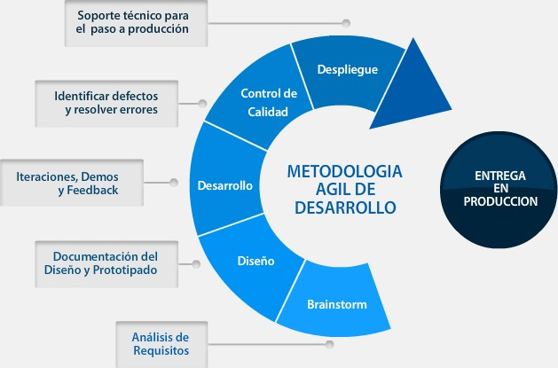
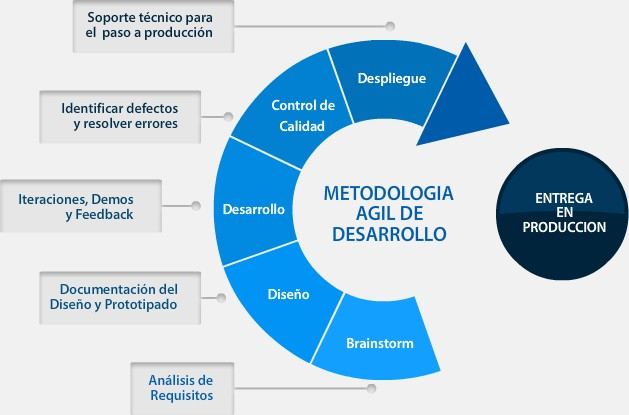

Proceso mediante el cual el cliente da a conocer lo que desea , identificar los distintos componentes para llevar acabo el desarrollo de lo que se va a crear
DESARROLLO
Desarrollo y codificación de los elemento descritos en las anteriores etapas , se establece el lenguaje de programación y se realizan pruebas sobre el mismo.
PUESTA EN MARCHA
Se hace entrega del producto al cliente mostrar su funcionamiento y capacitación a las personas que lo van a utilizar
 
